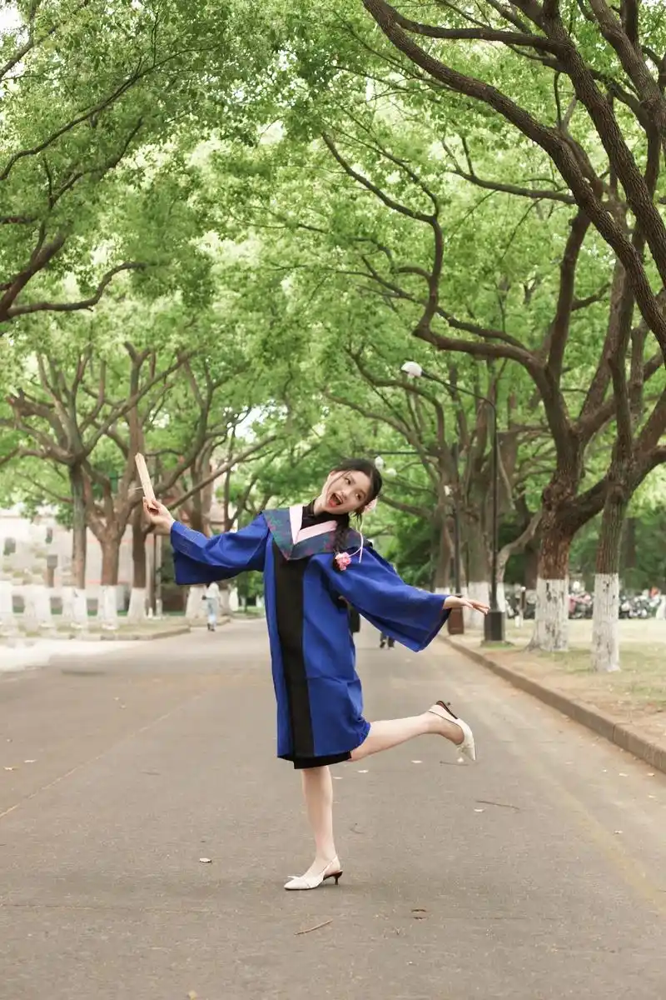

你好，我是Riertin
一个热爱艺术与音乐的19岁大学生
个人简介
我目前就读于苏州大学艺术学院，是一名本科在读生。从小就对艺术充满热情，喜欢用各种方式表达自己的想法和情感。无论是通过画笔、色彩，还是通过音乐、旋律，我都在不断探索和学习，希望能够找到属于自己的艺术语言。
在大学的学习生活中，我不仅系统地学习了艺术理论和技法，更重要的是学会了如何观察世界、感受生活。每一次创作都是一次自我对话，每一幅作品都记录着我成长的足迹。
我的兴趣
绘画创作
喜欢尝试不同的绘画风格，从水彩到素描，从写实到抽象，每一种技法都让我着迷。
音乐欣赏
音乐是我的精神食粮，不同风格的音乐给我带来不同的灵感和情感体验。
阅读思考
喜欢阅读各类书籍，从艺术史到哲学，从小说到诗歌，阅读让我的思想更加丰富。
旅行探索
喜欢到不同的地方旅行，感受不同的文化和风景，为创作积累素材和灵感。
学习经历
2023年至今
苏州大学艺术学院
本科在读，主修艺术设计专业，系统学习艺术理论、设计方法和创作技巧。
2020-2023年
高中艺术学习
在高中阶段开始系统学习美术，参加了多次艺术比赛和展览，为进入大学打下基础。
童年时期
艺术启蒙
从小就喜欢画画和听音乐，父母的支持让我能够自由地探索自己的兴趣。
创作理念
我相信艺术来源于生活，每一次创作都是对生活的观察和思考。我希望通过我的作品，能够传递出积极向上的情感，让观者感受到美好和温暖。
在创作过程中，我注重情感的表达和细节的处理。无论是一幅画还是一段音乐，我都希望它们能够触动人心，引发共鸣。艺术不应该是高高在上的，它应该是生活的一部分，是连接人与人之间的桥梁。